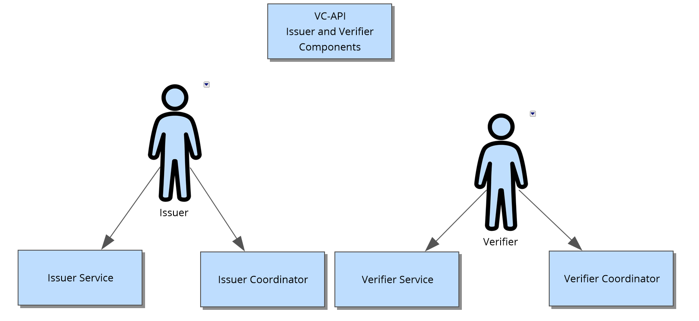
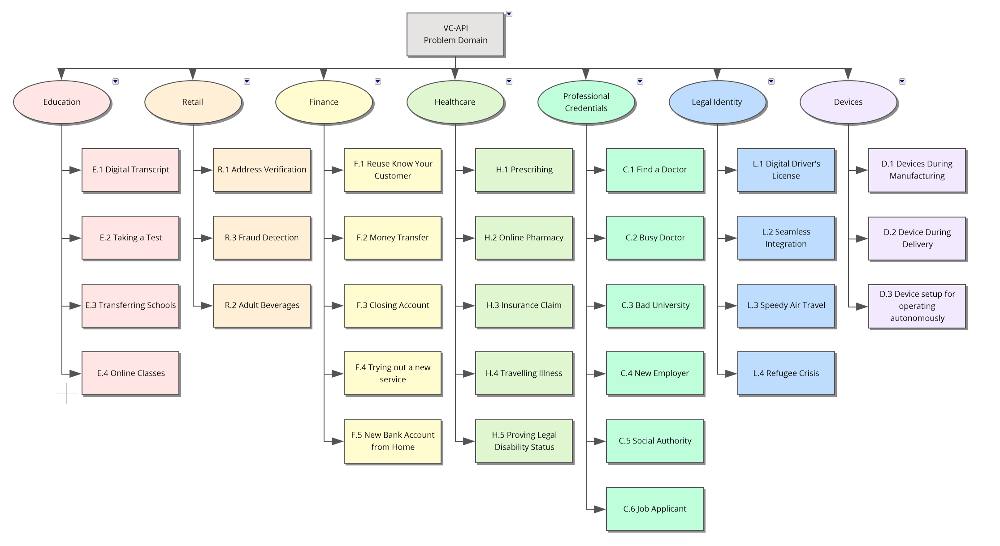

Fundamentally, the Verifiable Credential API (VC-API) is a standard developed to give technologists a way to enable holders of
VCs to use them how and where they choose. Verifiable Credentials make claims which may be a qualification, achievement, quality, or piece
of information about an entity's background such as a name, government ID, payment provider, home address, or university degree.
The use cases outlined here are provided to help make progress toward possible future standardization and interoperability of the transport
of both low- and high-stakes claims as outlined in the VC Use Cases. The use cases in this document focus on concrete
scenarios that the technology defined by the group should address.
This document represents a concise but limited collection of use cases meant
to be reviewed alongside the Verifiable
Credentials API.
Work on this document is ongoing and subject to change as the conversation around the
VC API evolves in the main group. This should currently be treated as a draft document and
as such will have errors. As the VC API gets closer to a completed specification, this
document should reflect the current understanding and status of that work.
The VC-API Working Group at the W3C is developing standards for
exchanging Verifiable Credentials that have been verified by a third
party and to make them easier for holders to use on the Web and in life.
Importance of this work
Entities (people, organizations, devices) need to make many kinds of
claims as part of their everyday activities. As more and more of these
important activities move to the Internet, entities need to be able to
transmit instantly verifiable claims (e.g., about their location,
accomplishments, value, what-have-you). From educational records to payment
account access, the next generation of web applications will authorize
entities to perform actions based on rich sets of credentials issued by
trusted parties. The Holders of these claims, in the form of Verfiable Credentials,
need to be able to take the claims they control and make use of them where, when,
and how they wish, often in ways the original issuer of the VC may not have
originally indended. Having a common, standard way for these Holders of claims
to use them as they wish is vital to a person having control of their own data.
Standardization of the transport layer for digital claims makes it possible for many
stakeholders to interact with their desired counterparties, without being locked into proprietary platforms.
Use case model
This document presents an aggregate use case model, comprised of Needs, Roles,
Tasks, and Sequences. Taken together, these models define the use cases that
the VC-API Working Group has addressed.
User needs define the problem space addressed by Verifiable Credentials.
User Roles specify the roles different entities play when interacting
with Verifiable Credentials. Tasks define the functions users can
accomplish, and sequences demonstrate how tasks might be realized, by
interactions between entities over time.
As with all models, this use case model is neither exhaustive nor complete. The
listed uses cannot capture all possible use cases. Similarly, the models do not
completely characterize the use cases represented. However, the combined model
is intended to provide specific, coherent guidance for the work ahead.
The model used here draws heavily from the Verifiable Credentials Use Cases model.
This is due to the fact that the VC-API is meant to support the transport of
VCs in the use cases considered for the Verfiable Credential Working Group.
User Roles
There are three roles supported by Verifiable Credentials as defined by the
VCWG: Issuer, Verifier, and Holder. In the VC Use Cases, a fourth
role — that of subject — is defined. However, for the purposes of the VC-API, the subject
is not relevant except when the same entity is both the Holder and the subject. For this
reason, the Subject role does not appear in the VC-API.
VC-API User Roles
The above roles were those defined for the VCWG, however, due to the way most
production software on the internet works, for the purposes of the VC-API there arises
the need to delve into some detail as to how the Issuer and Verifier roles are structured.
This is due to the fact that there are many use cases where one company is making use of
services to handle part of the technology stack. This has led to both Verifier
and Issuer splitting into two entities each, henceforth refered to as components of the
Issuer and Verifier: Issuer Service, Issuer Coordinator,
Verifier Service, and Verifier Coordinator.

VC-API Role Components
The respective Service and Coordinator components combine to fulfill
the role of the Issuer and Verifier as described in the VCWG.
It is fully expected by the VC-API that software will exist that may fulfill only part of
any of the roles, by implementing any combination of these component roles:
Issuer Service, Issuer CoordinatorVerifier Service, and Verifier Coordinator.
Issuer Service
The entity that creates, generates, and delivers a Verifiable Credential — which contains
a some set of claims made by the Issuer Coordinator about one or more subjects — to the Issuer Coordinator.
Issuer Coordinator
The entity that deals with business rules and policies around a
user's request for a particlar claim to be issued.
The VC-API address user needs in a number of key domains:

VC-API, Example Domains for User Needs
Education
The education domain includes all levels of the educational experience; from
primary through professional continuing education.
E.1 Digital transcript
A couple of years after Joleen succussfully started an "extended transcript"
program at the Unniversity she works for, the administration has decided to
issue all transcripts digitally. As such they upgrade the system to make use
of Education Credential Issuer Inc's issuing service, and put together a new
web page to act as their issueing coordinator. Once the system is in place,
Joleen pushes an email notification to the student body, both past and present,
that they can now receive digital transcripts at the newly created website to
the digital wallet of their choice.
E.2 Taking a test
Eunice is about to take her ACT (a test used to evaluate her readiness for
college). When she arrives at the testing center, she is required to present
identification. She presents her government-issued identity credential in the
form of a QR Code to the test runner, who scans it. The test runner's device
acts as the verification coordinator, which makes use of the ACT orginization's
verification service to verify the presented identification credential.
Everything checks out with Eunice's identification and she sits down to
take the text.
E.3 Transferring schools
Rocky is an undergraduate student at Wossamotta U. His school provides a
credential repository service to all students and alumni, so he chooses
to use it. In his third year, Rocky decides to transfer to Moosylvania Tech.
They do not offer a service, but he does not want to continue to use the
service of his old (and now rival school) so he moves his claims to the
service offered by his bank without needing to have them reissued.
E.4 Online classes
In MOOC and other online learning systems, being able to reliably identify
participants is vital to ensure the individual evaluation and certification.
Nick is participating in a course online and takes a test. He is required to
provide his credentials to prove his identity before the test, which he does
in the form of a government-issued idenfication credential. MOOC uses a backend
verification service which verifies these, and once they are satisfied that Nick
is who he says he is, have Nick take the courses he signed up for. At the end of
the courses, MOOC then uses their proprietary issuer service to provide Nick a
verifiable credential to the wallet of his choice regarding the results of his test.
Retail
The retail domain encompasses all things where there is an exchange of value on
an individual level. This includes brick-and-mortar store fronts, web-only
venues, and even person-to-person sales.
R.1 Address verification
Francis has found the perfect pair of shoes. When processing orders, Giant Shoe
Company wants to be certain that his shipping address is accurate (inaccurate
addresses are very expensive in terms of customer service). They offer a
discount for customers who make verifiable addresses available as part of the
checkout process. Francis offers his certificate to Giant Shoe Company's
verifier coordinator, which verifies Francis's address, making use of
Generic Verfifier Service Inc. Francis gets the perfect shoes for
even less than he expected.
R.2 Adult beverages
June goes to her local beer and wine store to buy a bottle of wine. She submits
her identity credential that lets the liquor store owner know that she is over
21 without having to reveal her actual date of birth, her address, or her state
ID number. The store makes use of their Point of Sale Vendor's verification service
which intigrates into the Point of Sale so the clerk has an easy UI to use during
the transaction.
R.3 Fraud detection
On a bright Sunday, Oskar remembers that he still needs to buy his wife a
precious gift for their wedding anniversary. However, he is acutely aware that
it is precisely in weekends that gangs set up fraudulent web shops that claim
to sell such gifts, while in fact they only take the cash, and disappear on
Mondays. So before actually purchasing a gift from the web shop of his choice,
he requests the shop to provide a credential issued by the chamber of commerce,
that contains proof of legitimacy. After having verified that the shop is
legit, by making use of the Wallet Verifier Service built into his
digital wallet which receives the proof of legitimacy, he can purchase his gift.
Finance
The Finance domain includes banking, brokerage, insurance, and other
industries where there is a high value placed on knowing exactly with whom
you are dealing.
F.1 Reuse know your customer
Jane is opening an account at MidBank in Finland. As part of that process,
the bank asks her to provide two from a variety of possible sources to confirm
her identity — a so-called "Know Your Customer" check. She goes
to the bank website, logs in, and navigates to the KYC page. She then
selects the government-supplied verifiable credentials that confirm she
receives postal mail at a certain address and that she has a national ID card,
submitting these. MidBank has stood up their own verification service, which
checks the provided credentials, and confirms that they are properly issues,
and still valid, credentials issued to Jane. Confirming these allows the bank
to open her account and be confident in her identity when she conducts transactions.
Now that the account is open, Jane is issued, by MidBank's Issuer Service,
a digitally-signed credential for her checking account at MidBank.
This credential verifies that Jane has an account at MidBank
and has access to her associated checking account. Since MidBank
(and all banks in Finland) are required to perform "Know Your Customer"
checks on accounts, this credential can also be used as sufficient
verification by other financial institutions. This can help Jane assure
destination banks that she is verified, thereby allaying concerns about
misdirected transactions and money laundering.
F.2 Money transfer
Susan wants to send funds to her family in another country via a popular money
transfer service. She has verifiable credentials in her
credential repository that can be used to share her
identity profile. She has also been sent a credential from her
family verifying their banking information. By sharing these with the money
transfer service, which have decided to make use of TopBank's Verification
Service, they can automatically verify the source and destination of
funds, thus being confident in the delivery of those funds and satisfying
various regulations regarding prevention of money laundering.
F.3 Closing account
John opens a checking account at Big Bank Co and is issued a
verifiable credential indicating that the account exists, that the bank
verified John's identity, and that John has access to the account. To receive
these credentials, John goes to Big Bank Co's website, selecting his prefered
wallet as the destination. Some time later, John is moving to a new city
and decides to close that account. Big Bank Co needs to revoke that claim
as part of their normal account closing process. When John later goes to
do KYC with the New Bank Co, in his new city, he mistakenly submits his old
Big Bank Co account credential as part of the KYC process. New Bank Co's
verification service flags this credential as revoked, and New Bank Co's website
asks John for additional info.
F.4 Trying out a new service
Nikita has several accounts with BigBank, as well as a brokerage account with
WallStreetCo. She had placed all of her claims in a
credential repository at BigBank that came free when she opened her
accounts. WallStreetCo is now offering a new repository that has an
interface she thinks she will prefer. Nikita copies her claims from
BigBank into the repository at WallStreetCo to experiment with their service,
but continues to use the service from BigBank while she is testing.
F.5 New bank account from home
Alice wants to open a new bank account. BigOnlineBank offers the ability to
do this from home if she can provide electronic credentials. She offers
government-issued certificates that verify her identity (address, national
identity number, etc.), and opens her new account from her couch. As part of
this process, BigOnlineBank has stood up their own verification and issueing
services. Once they have verified Alice's credentials, they then notify Alice
that she can collect her proof of account credential from the provided link
at her leisure.
Healthcare
Privacy is critically important in the healthcare industry. This domain looks
at everything from physical interaction to connecting patients and providers
with service organizations.
H.1 Prescribing
Barney is a physician, and has recently become board certified in his state.
The state's board makes use of the international Medical Certificate Issuer
to issue credentials that adhere to the international standards for
medical practitioners. Upon completing his state's board certificate test,
Barney is issued a digital certificate confirming that he is
certified to practice medicine in that state. Barney can now use this
certificate when writing prescriptions and referrals, thereby improving
accountability and verifiability.
H.2 Online pharmacy
iPharmacy receives a prescription for Bob electronically from a local clinic.
It includes a certificate about the physician that issued the prescription as
well as one about Bob. iPharmacy's system automatically verifies the ability
of the physician to write prescriptions, as well as Bob's insurance coverage.
When Bob arrives to pick up his medication, iPharmacy further correlates his
identity with the certificate, thereby improving the end-to-end accountability
of their system.
H.3 Insurance claim
Tracy has a sore throat soon after moving to a new town. She finds a physician
through her health care network and goes in for treatment. She is a new
patient, so the clinic needs to know who she is and how she will be paying.
When checking in, she presents her verifiable credential that
demonstrates her identity and her proof of insurance, which is checked by
the clinic using the issuer service provided by the Medical Office Supply
Co. When the clinic submits this to the insurance company,
they can automatically ascertain that she submitted her proof of identity
and insurance to the provider, and granted the physician
the ability to submit the claim for payment.
H.4 Traveling illness
John is on the vacation of a lifetime, travelling the world. Falling ill, he
visits a health clinic in a country in which he does not live. At the clinic,
he is asked for proof of identity. He provides a credential that verifies his
name and address, but elects not to disclose his marital status nor his social
security number, as those are neither requested nor required at this clinic.
He further marks the disclosure as expiring in 30 days—he does not want
his information verifiable after that time. The clinic verifies these credentials,
making use of Medical Office Supply Co's verification service after John submits
the credentials to their administrative staff at the clinic via QR Code.
H.5 Proving Legal Disability Status
Trina, who is legally blind, is currently unemployed, and needs to use the
local free disability ride service to get to the employment office. To use
this service, she is required to verify that she maintains legal disability
status. Trina provides her government-issued disability credential to sign up
for the ride service, and is not required to disclose her specific disability
to the ride service, as this could put her at personal risk. As the ride
service is only checking very specific credentials, they have created their
own verification service to use. Once Trina's credential has been verifies,
they issue her a credential which gives full access to their service.
Professional Credentials
In many aspects of life it is important to know that entities are who
they say they are, and that they can do what they say. Professional
accreditation is one way of learning about the abilities of an entity.
Being able to verify these credentials is essential to their value.
C.1 Find a doctor
Jason is looking for a new primary care physician. His health provider
includes information on their web site about the physicians they have on
staff, including verifiable credentials about their
education, board certification, and continuing education. Jason would like
assurance that these are legit physicians, and so downloads the provided
credentials and submits them to the Open Medical Board Verification Service,
a national organization that checks the validity of medical claims for the
public. Once submitted, and verified, Jason is confident that
his new physician satisfies his requirements.
C.2 Busy doctor
Barney was a board-certified physician, but he ran out of time to complete
his continuing education requirements and his certification lapsed. Since the
board can revoke his certification, credential verifiers will
automatically be aware that he can no longer issue prescriptions or perform
medical procedures. However, Barney finds himself on a cruise where a fellow
cruise enjoyer has fallen over, in clear pain. Barney applies first aid until
the cruise doctors can get there. As part of the cruise ship's inquiry to the
event, for liability reasons, Barney provides them, via email,
his revoked physician credentials, along side his, still valid,
first aid certificate. The cruise doctor reviews these after they are verified
by the Generic Verifier Service that the cruise ship uses, and sends Barney
a response email thanking him for the assistance.
C.3 Bad university
Jane was issued a certificate by BigTraining Co., indicating that she was a
trained Project Manager. It was later discovered that BigTraining Co. was not
actually training anyone, and their organization's certificate was revoked via
the US Department of Education's Accreditation Database. Jane's credential is
therefore invalid, and when Jane goes to submit the credentail received from
BigTrainin Co. at her next job, she is notified by the company she is applying
to that her credential is not valid.
C.4 New employer
Jessica is a medical doctor practicing in the United States. She has a variety
of digital claims that explain her qualifications, schooling, continuing
education achievements, and board certifications. These are all stored in the
credential repository provided by her employer. When she is offered a
position with another health provider network, she can automatically transfer
all of these claims to her new employer.
C.5 Social authority
Josie is a healthcare worker that has created a profile on a professional
social network to make herself readily available for new opportunities in the
workforce. She lists her employment history and credentials including degrees,
certificates, and digital badges. The website requests verification of her
credential claims in order for her credentials to be visible when she
posts messages. Josie authorizes the sharing of the relevant claims with
the website, and the site verifies them, making use of their partner,
Workplace Credential Verifier Service, before allowing Josie to expose them.
"Freedom?" is an online forum that encourages free discussion about issues
controversial in Freedonia. The forum allows users to register anonymous
accounts, but it also allows users to obtain badges based upon real-world
certifications. Paula has been certified as an aid worker, and wishes that
information to be marked on her posts. She shares her certificate with the
forum, but limits it to only verifying that she is the holder of the
certificate, that she is the subject of it, and that she is an aid
worker. In this way she maintains her anonymity in this controversial forum
while still being able to assist her fellow countrymen.
C.6 Job applicant
Software Co. has posted an open position online and they are receiving
thousands of applications. Cindy has applied for the job. Unlike many
applicants, she has attached her education credentials—college degree,
additional specific software training, etc. Software Co. evaluates these
credentials, using the international Education Verification Service,
which was stood up by a group of international univerisities to make the
verification of education credentials easy, as they receive her application.
Because her materials are verifiable and verified, her application is immediately
forwarded as a viable candidate.
Legal Identity
For many transactions, an entity must be able to prove some aspect of
their identity in a way that can be quickly verified. Governments and other
widely recognized entities are well positioned to provide such
identification in a verifiable digital form.
L.1 Digital driving license
Asako just passed the final test to receive a drivers license. As she is still
a new driver, and may be pulled over for a traffic violation, she would like
to receive a credential that asserts a claim that she has right
to drive a car. She requests a credential on the certifying authority's website,
(issuer) that she can use to prove to the officer
(credential verifier) that her claim is valid. The certifying
authority and officer both make use of the state's issuing and verifier
services, respectively, as they are both state entities.
L.2 Seamless immigration
Tom is a frequent international traveler. In order to speed processing
through immigration check points, he applies for a digital passport from his
governmental authority. After satisfying background check requirements,
by submitting a few credentials requested by the government authority, the
authority issues Tom an electronic version of his passport. This version is
verifiable and retains a history of all the places he visits so that
immigration officials can quickly and easily evaluate his suitability as a
visitor to their country. Once they are satisfied, they will automatically
add the details of this new visit to Tom's passport.
L.3 Speedy air travel
Security for air travel is more and more rigorous, requiring more and more
time to validate each passenger. Ivan has a collection of
verifiable credentials that are assembled into his air travel
Identity Profile. When Ivan needs to pass through a security
checkpoint at his airport, he presents this profile before entering the
line. Because his identification can be immediately and automatically
verified, by the TSA's verification service, he is permitted to skip
the long line and go straight to the metal detector.
L.4 Refugee crisis
Thousands of people each year are displaced because of man-made and natural
disasters. Anoushka is one such, having been forced to flee her village along
with her mother and younger brother. They reach an IFRC center just across
the border in a relatively safe area, but with no documentation. Since the
government of her homeland is in turmoil, there is no way for the IFRC staff
to easily establish their identities. Fortunately, Anoushka had been issued
a self-sovereign proof of birth, attached to which is the proof of birth and
marriage for her parents. She is able to retrieve this because it is available
from many places, including the Internet. Since it is verifiable, the IFRC is
comfortable vouching for them and resettling them in a safer area for the
duration of the conflict.
Devices
Intelligence devices are created and deployed so that they can interact with
other entities (people, organizations, devices). Establishing trust
and maintaining secure relationships with these devices is especially critical.
D.1 Devices during manufacturing
Bob, the director of production at HVAC Manufacturing, issues a
device-identifying verifiable credential (e.g. IDevID, IAK) at the
factory for an energy-saving fan controller IoT device. HVAC Manufacturing
provides Bob with the front end software for this, and has stood up their
own, custom, issueing service for use company wide.
Carol, senior quality engineer at Certifications Testing Lab, issues a
certification of specification-compliance verifiable credential to the
fan-controller device at the certification lab during the manufacturing
process. Certifications Testing Lab provides Carol with the front end software
to do this but makes use of the international Fan-Controller Standards Group's
issueing service, which requires attestations of the engineer making the
final claims about the device, before it will issue the specification-compliance
certificate.
When the fan controller is installed at the customer's office at Modern Office
Spaces, the controller's identifying credential can be verified by Sam,
IT technician, to establish the identity of the controller as part of the
on-boarding of the new controller. The controller's specification-compliance
credential is verified to demonstrate the controller's Energy-Star
compliance. Sam's handheld scanner makes use of Scanner Co's verification
service, a package deal with the device.
D.2 Devices during delivery
As the fan controller leaves the factory, additional
verifiable credentials are issued by Vince, a systems engineer at VAR
Resellers, as he verifies the manufacturer's configuration matches the
verifiable credentials accompanying the device. For this process,
VAR Resellers has stood up their own verification and issueing services
to be used within the company. He then installs a software package specific
to Modern Office Spaces needs and issues verifiable credentials
that establish evidence of possession by VAR Resellers and the software
additions Vince made to the device.
Finally, upon delivery to Sam, the end customer, the
verifiable credentials show that the fan controller has been securely
handled and contains the correct features and certifications.
D.3 Devices setup for operating autonomously
Sam, the new device owner, needs to trust the device originated from HVAC
Manufacturing and was handled correctly at Certifications Testing Lab and
installed with the correct software package at VAR Resellers. After Sam
verifies each of the verifiable credentials, using Generic Online
Verifier's online service. He issues another verifiable credential
for fan controller #37 which includes assertions relating to trust:
device manufacturer model/version, software manufacturer
model/version, security versions of components TCB, and associated devices the
fan controller is authorized to interact with including thermostat-board-room.
To do this, he goes to HVAC Manufacturing's website and requests the new
credential by scanning his new device's barcode and submitting an image to
HVAC Manufacturing's website. After verifying the device is one of their, HVAC
Manufacturing issuer's Sam the requested credential.
The thermostat-board-room monitors room temperature. When the temperature is
too hot it switches the fan controller #37 on and later when the temperature
reaches a comfortable level, off. The device makes sure the control signals
from thermostat-board-room are authorized (namely, that Sam intended for
thermostat-board-room to control the fan controller). To do this, Sam decides
he trust's HVAC Manufacturing to verify these types of credentials for him, and
so he puts the end-point provided by HVAC Manufacturing for these types of
purposes into his fan-controller's settings page.
Sam is concerned about the security of the smart board room. He configures
the autonomously interacting devices to re-verify device trustworthiness
attributes periodically by re-checking that the device originated from HVAC
Manufacturing and was handled correctly by Certifications Testing Lab and
installed with the correct software package by VAR Resellers. For this purpose,
Sam does not trust HVAC Manufacturing's verifier service, as there could be
a conflict of interest there, so Sam instead decides to use Generic HVAC
Verifier's verification service, adding the provided end-point to the approriate
configuration files so the devices use his selected verification services.
Sam may update the device’s software occasionally during its lifetime. Even
though Sam is applying the update, VAR Resellers supplies the correct update.
The device ensures that only VAR Resellers is able to supply the updated
software image and that only Sam is able to apply the update.
Focal Use Cases
Get Digital Permanent Resident Card
Lana is an IT administrator for the United States Citizenship and Immigration Services (USCIS)
Digital Permanent Resident Card (PRC) program. She configures the USCIS website to issue digital
Permanent Resident Cards by utilizing industry standard issuer software and setting up the appropriate
HTTP API Authorizations between systems. Legal Permanent Residents, upon receiving their physical card
in the mail, are given the USCIS website URL, a login account, and PIN code that they may use to manage
their account and pick up their digital Permanent Resident Card. When Louis, a Legal Permanent Resident,
requests a digital Permanent Resident Card via the USCIS website, he authenticates using his login account
and once authenticated, provides a DID associated with his client-side digital wallet against which the
website will issue VCs. The USCIS website then connects to the digital card issuing server, which builds
the Verifiable Credential Permanent Resident Card using Louis' account data, and then utilizes industry
standard HTTP APIs to issue the Permanent Resident Card as a Verifiable Credential. Louis can then use his
Digital Permanent Resident Card in online scenarios when he needs to prove his resident status, such as
when applying for a job.
Riley has onboarded into the TruAge digital age verification system, which has provided her
with a set of Verifiable Credentials that she stores in her digital wallet. A subset of the
Verifiable Credentials that she has received are digitally signed single-use age tokens that
only assert that she is above the age of 21 and are marked as "used" by the TruAge system
when they are submitted as a part of an age-restricted goods purchase, such as buying a
bottle of wine. Eventually, Riley runs out of single use age tokens in her digital wallet.
The digital wallet keeps track of which tokens have been used and once all tokens have been
consumed, contacts a refresh service endpoint listed in one of the TruAge credentials that
provides new over-age tokens. The digital wallet requests a new set of tokens by hitting the
HTTP API of this VC-refresh service listed in the “refreshService” array and POSTing the
original Verifiable Credential containing the refresh service description. The HTTP API
ensures that it has received a valid credential and reissues a set of new digitally signed
single-use age tokens in the response.
Description: Ignio, a logistics manager for "Kirk Company", would like to submit all necessary paperwork
to send his company's products across international boundaries. These products are considered hazardous
chemicals and thus are regulated, requiring extra paperwork to be filed before transportation is approved
across boundaries. Some hazardous material shipments are different resulting in different required paperwork,
and Ignio wants to automate as much of the process as possible with Shippers,
their 3rd Party Logistics company (3PL). There are a set of verifiable credentials that Ignio is willing to
share with Customs as well as the transportation company.
When Kirk starts a shipping workflow, his company's systems initiate the workflow by contacting a known
location on the Shipper's Website. A presentation exchange occurs to first DIDAuth the company and send
generic mandatory information for any shipment; if and only if the information provided requires additional
information‒in this case a hazmat certification‒a second exchange is initiated to request this outstanding/required
hazmat info. Once this is received, Shippers can send back a Bill of Lading in VC form. The two (or more)
credential exchanges are composable and idempotent, ending in a valid BoL if successful.
Requirements:
1. Verify DID Authentication Presentation,
2. API Authorization,
3. Issue Verifiable Credential,
X. Website as Consumer,
X. continuous workflow
Mermaid
sequenceDiagram
autonumber
Ignio (Logistic Manager)->>Kirk Company Enterprise Resource Planning App (Holder and Holder Service):Verify all necessary info ready to ship
Kirk Company Enterprise Resource Planning App (Holder and Holder Service)->>Ignio (Logistic Manager):Display requested data
Ignio (Logistic Manager)->>Ignio (Logistic Manager):Evaluate data
Ignio (Logistic Manager)->>Ignio (Logistic Manager):Decide ready to ship
Ignio (Logistic Manager)->>Kirk Company Enterprise Resource Planning App (Holder and Holder Service):Trigger shipment
Kirk Company Enterprise Resource Planning App (Holder and Holder Service)->>Shipping Co. Website (Issuer App):shippingco.com/createShipment?"KirkCallbackURL"
Shipping Co. Website (Issuer App)->>Kirk Company Enterprise Resource Planning App (Holder and Holder Service):Ack Request
Shipping Co. Website (Issuer App)->>Shipping Co. Website (Issuer App):Evaluate business rules
Shipping Co. Website (Issuer App)->>Shipping Co. Website (Issuer App):Generate nonce for VP Challenge
Shipping Co. Website (Issuer App)->>Shipping Co. Website (Issuer App):Generate VP Request
Shipping Co. Website (Issuer App)->>Kirk Company Enterprise Resource Planning App (Holder and Holder Service):KirkCallbackURL?"Domain&Challenge + Shipping Info + ShippingCoCallbackURL1"
Kirk Company Enterprise Resource Planning App (Holder and Holder Service)->>Shipping Co. Website (Issuer App):Ack Request
Kirk Company Enterprise Resource Planning App (Holder and Holder Service)->>Kirk Company Enterprise Resource Planning App (Holder and Holder Service):Evaluate Business Rules for requested Shipping Info
Kirk Company Enterprise Resource Planning App (Holder and Holder Service)->>Kirk Company Enterprise Resource Planning App (Holder and Holder Service):Generate challenge response VP which contains requested Shipping Info VCs
Kirk Company Enterprise Resource Planning App (Holder and Holder Service)->>Shipping Co. Website (Issuer App):ShippingCoCallbackURL1?"ChallengeResponseVP + KirkCallbackURL2"
Shipping Co. Website (Issuer App)->>Kirk Company Enterprise Resource Planning App (Holder and Holder Service):Ack Response
Shipping Co. Website (Issuer App)->>Generic Verifier SAAS (Verifier Service):genericverifier.com/presentations/verify?"ChallengeResponseVP"
Generic Verifier SAAS (Verifier Service)->>Shipping Co. Website (Issuer App):ackRequest
Generic Verifier SAAS (Verifier Service)->>Generic Verifier SAAS (Verifier Service):Evaluate Challenge Response
Generic Verifier SAAS (Verifier Service)->>Shipping Co. Website (Issuer App):shippinco.com/presentations/verified?"VerificationResultVP"
Shipping Co. Website (Issuer App)->>Generic Verifier SAAS (Verifier Service):ackResponse
Shipping Co. Website (Issuer App)->>Shipping Co. Website (Issuer App):Evaluate business rules
Shipping Co. Website (Issuer App)->>Shipping Co Database:Register Shiptment info
Shipping Co Database->>Shipping Co. Website (Issuer App):info registered
Shipping Co. Website (Issuer App)->>Shipping Co. Website (Issuer App):Generate nonce for VP Challenge
Shipping Co. Website (Issuer App)->>Shipping Co. Website (Issuer App):Generate VP Request
Shipping Co. Website (Issuer App)->>Kirk Company Enterprise Resource Planning App (Holder and Holder Service):KirkCallbackURL2?"Request for DID Atuh + Hazmat Info + ShippingCoCallbackURL2"
Kirk Company Enterprise Resource Planning App (Holder and Holder Service)->>Shipping Co. Website (Issuer App):Ack Request
Kirk Company Enterprise Resource Planning App (Holder and Holder Service)->>Kirk Company Enterprise Resource Planning App (Holder and Holder Service):Evaluate business rules for requested Hazmat Info
Kirk Company Enterprise Resource Planning App (Holder and Holder Service)->>Kirk Company Enterprise Resource Planning App (Holder and Holder Service):Generate VP containing Hazmat Info
Kirk Company Enterprise Resource Planning App (Holder and Holder Service)->>Shipping Co. Website (Issuer App):ShippingCoCallbackURL2?"HazmatVP + KirkCallbackURL3"
Shipping Co. Website (Issuer App)->>Kirk Company Enterprise Resource Planning App (Holder and Holder Service):Ack Response
Shipping Co. Website (Issuer App)->>Generic Verifier SAAS (Verifier Service):genericverifier.com/presentations/verify?"HazmatVP"
Generic Verifier SAAS (Verifier Service)->>Shipping Co. Website (Issuer App):ackRequest
Generic Verifier SAAS (Verifier Service)->>Generic Verifier SAAS (Verifier Service):Evaluate Hazmat VP
Generic Verifier SAAS (Verifier Service)->>Shipping Co. Website (Issuer App):shippinco.com/presentations/verified?"VerificationResultVP"
Shipping Co. Website (Issuer App)->>Generic Verifier SAAS (Verifier Service):askResponse
Shipping Co. Website (Issuer App)->>Shipping Co. Website (Issuer App):Check business rules
Shipping Co. Website (Issuer App)->>Shipping Co Database:Register Hazmat Info
Shipping Co Database->>Shipping Co. Website (Issuer App):info registered
Shipping Co. Website (Issuer App)->>Shipping Co Database:Request Shipment and Hazmat info
Shipping Co Database->>Shipping Co. Website (Issuer App):requested info
Shipping Co. Website (Issuer App)->>Shipping Co. Website (Issuer App):Generate BoLRequestVP
Shipping Co. Website (Issuer App)->>Generic Issuer SAAS (Issuer Service):genericissuer.com/credentials/issue?"BoLRequestVP"
Generic Issuer SAAS (Issuer Service)->>Shipping Co. Website (Issuer App):ackRequest
Generic Issuer SAAS (Issuer Service)->>Generic Issuer SAAS (Issuer Service):Check business rules
Generic Issuer SAAS (Issuer Service)->>Shipping Co. Website (Issuer App):shippingco.com/credentials/issued?"BoL"
Shipping Co. Website (Issuer App)->>Generic Issuer SAAS (Issuer Service):ackResponse
Shipping Co. Website (Issuer App)->>Kirk Company Enterprise Resource Planning App (Holder and Holder Service):KirkCallbackURL3?"BoL"
Kirk Company Enterprise Resource Planning App (Holder and Holder Service)->>Shipping Co. Website (Issuer App):Ack Response
Kirk Company Enterprise Resource Planning App (Holder and Holder Service)->>Ignio (Logistic Manager):BoL Ready notice
UC6.3 Mermaid
Contributed by: Digital Bazaar
Author Email: msporny@digitalbazaar.com
Author Github: msporny
Aggregated Credential Workflow
Kenzie is using digital credentials to apply for a job at as a teacher.
Her teaching certification is already in her digital wallet but the school also requires a
criminal background check for which Kenzie does not currently have a credential. The process
of getting the background check can take 24–48 hours. Kenzie goes to the job application
website and submits her application; the website responds requesting both her teaching credential
and a criminal background check credential --issued by some set of known issuers?--
Some of his credentials are available today, some will need to be provided when they are ready
(for example, a criminal background check can take 24-48 hrs to process). He would like these credentials to
be presented to the Verifier (service provider) when ready, without having to constantly return to the Verifier
(service provider) and deliver them "by hand". He should be able to have them released from his Holder directly
as they become available.
Requirements:
X. Verifiable Presentation by policy,
X. Automated notifications,
X. Asynchronous release,
X. Authorized/pre-consented authorization,
X. VP formed with future VCs ("stateful VP")
X. Present Credentials issued by third party?,
Mermaid
sequenceDiagram
autonumber
Kenzie (Holder)->>jobapplications.com (Verifier App):jobapplications.com/presenations/submit?"application"
jobapplications.com (Verifier App)->>jobapplications.com (Verifier App):process application
jobapplications.com (Verifier App)->>Kenzie (Holder):Request credentials A and B
Kenzie (Holder)->>Kenzie's Wallet (Holder Service):Check for A and B
Kenzie's Wallet (Holder Service)->>Kenzie (Holder):Display A, B not found
Kenzie (Holder)->>Kenzie's Wallet (Holder Service):Need B
Kenzie's Wallet (Holder Service)->>backgroundcheck.com (Issuer App):backgroundcheck.com/index.html
backgroundcheck.com (Issuer App)->>Kenzie's Wallet (Holder Service):index.html
Kenzie's Wallet (Holder Service)->>backgroundcheck.com (Issuer App):backgroundcheck.com/getBackgroundCheck
backgroundcheck.com (Issuer App)->>Kenzie's Wallet (Holder Service):getBackgoundCheck.html
Kenzie's Wallet (Holder Service)->>backgroundcheck.com (Issuer App):backgroundcheck.com/getBackgrounCheck/credentials/issue?"RequestedInfo"
backgroundcheck.com (Issuer App)->>backgroundcheck.com (Issuer App):evaluate requested info
backgroundcheck.com (Issuer App)->>Generic Issuer (Issuer Service):genericissuer.com/credentials/issue?"backgrounCheckCredential+info"
Generic Issuer (Issuer Service)->>backgroundcheck.com (Issuer App):issued VC
backgroundcheck.com (Issuer App)->>Kenzie's Wallet (Holder Service):kenzieswallet.com/credentials/recieve?"VC"
Kenzie's Wallet (Holder Service)->>Kenzie (Holder):Notify B Ready
Kenzie (Holder)->>jobapplications.com (Verifier App):jobapplications.com/presenations/submit?"application"
jobapplications.com (Verifier App)->>Kenzie (Holder):Request Credentials A and B
Kenzie (Holder)->>Kenzie's Wallet (Holder Service):Send A and B to jobapplications.com
Kenzie's Wallet (Holder Service)->>jobapplications.com (Verifier App):jobapplications.com/presentations/submit?"application with A and B"
jobapplications.com (Verifier App)->>Generic Verifier (Verifier Service):genericVerifer.com/presentations/verify?"applicationwith A and B"
Generic Verifier (Verifier Service)->>jobapplications.com (Verifier App):Verification Result
jobapplications.com (Verifier App)->>jobapplications.com (Verifier App):process application
jobapplications.com (Verifier App)->>Kenzie's Wallet (Holder Service):Application Accepted
Kenzie's Wallet (Holder Service)->>Kenzie (Holder):Application Accepted
UC6.4 Mermaid
Contributed by:SecureKey Technologies Inc.
Author Email: mike.varley@securekey.com
Author Github: mavarley
Submit/Sign/Verify a test credential to a licensure system
A student, Shabazz, wants to publish their MBLEx test results from an education test provider,
Massage Therapy Test Corp. Massage Therapy Test Corp proxies their authority to sign to a service provider,
SSI Ventures. SSI Ventures issues Shabazz a VC when he logs into his Massage Therapy Test Corp account
and enables his browser-based SSI Wallet, Billfold. The signed VC is then stored in Shabazz’ Billfold™ Wallet
to be presented elsewhere.
In a separate session, Shabazz logs into a web portal of a State Massage Therapy licensure system to
apply for his Massage Therapy license. The licensure specialist at the State checks the issuer using a
State accreditation system, then checks the signature on the test results VC and ingests the
credential’s payload. The licensure specialist then finalizes their workflow and issues
Shabazz a Massage Therapy license.
Requirements:
1. VC Issuance
2. VC Presentation
3. Issuer Lookup (is that business logic?),
4. VP Verification
5. VC Verification
X. Website as Consumer.
X. Issuance-as-a-Service,
Mermaid
sequenceDiagram
autonumber
Shabazz (Holder)->>Shabazz's Billfold (Holder App - includes browser):massagetherapytestcorp.com
Shabazz's Billfold (Holder App - includes browser)->>Massage Therapy Test Corp Webpage (Issuer App):messagetherapytestcorp.com/index.html
Massage Therapy Test Corp Webpage (Issuer App)->>Shabazz's Billfold (Holder App - includes browser):index.html
Shabazz's Billfold (Holder App - includes browser)->>Shabazz (Holder):display webpage
Shabazz (Holder)->>Shabazz's Billfold (Holder App - includes browser):Authenticate
Shabazz's Billfold (Holder App - includes browser)->>Massage Therapy Test Corp Webpage (Issuer App):messagetherapytestcorp.com/authenticate
Massage Therapy Test Corp Webpage (Issuer App)->>Shabazz's Billfold (Holder App - includes browser):authentication challenge
Shabazz's Billfold (Holder App - includes browser)->>Shabazz (Holder):challenge
Shabazz (Holder)->>Shabazz's Billfold (Holder App - includes browser):authentication information
Shabazz's Billfold (Holder App - includes browser)->>Massage Therapy Test Corp Webpage (Issuer App):messagetherapytestcorp.com/authenticate?"info"
Massage Therapy Test Corp Webpage (Issuer App)->>Massage Therapy Test Corp Webpage (Issuer App):process authentication information
Massage Therapy Test Corp Webpage (Issuer App)->>Shabazz's Billfold (Holder App - includes browser):authentication success
Shabazz's Billfold (Holder App - includes browser)->>Shabazz (Holder):authentication success
Shabazz (Holder)->>Shabazz's Billfold (Holder App - includes browser):get Message Therapy Credential
Shabazz's Billfold (Holder App - includes browser)->>Massage Therapy Test Corp Webpage (Issuer App):messagetherapytestcorp.com/getTherapyCredential
Massage Therapy Test Corp Webpage (Issuer App)->>Shabazz's Billfold (Holder App - includes browser):DID Auth Challenge
Shabazz's Billfold (Holder App - includes browser)->>Shabazz (Holder):Display wallet selector
Shabazz (Holder)->>Shabazz's Billfold (Holder App - includes browser):Selected Wallet
Shabazz's Billfold (Holder App - includes browser)->>Shabazz (Holder):Display profile selector
Shabazz (Holder)->>Shabazz's Billfold (Holder App - includes browser):Selected Profile
Shabazz's Billfold (Holder App - includes browser)->>Shabazz's Wallet (Holder Service):Request DID Auth Challenge Responsew
Shabazz's Wallet (Holder Service)->>Shabazz's Wallet (Holder Service):generate DID Auth response
Shabazz's Wallet (Holder Service)->>Shabazz's Billfold (Holder App - includes browser):DID Auth response
Shabazz's Billfold (Holder App - includes browser)->>Massage Therapy Test Corp Webpage (Issuer App):messagetherapytestcorp.com/getTherapyCredential/didAuth?"DIDAuthResponse"
Massage Therapy Test Corp Webpage (Issuer App)->>Massage Therapy Test Corp Webpage (Issuer App):Process response
Massage Therapy Test Corp Webpage (Issuer App)->>SSI Venture (Issuer Service):ssiventures.com/messagetestcorp/credentials/issue?"VPfromDIDAuth"
SSI Venture (Issuer Service)->>Massage Therapy Test Corp Webpage (Issuer App):messagetherapytestcorp.com/credentials/issued?"issuedCredentailsWrappedByIssuerApp"
Massage Therapy Test Corp Webpage (Issuer App)->>Shabazz's Billfold (Holder App - includes browser):HolderApp/newCredential?"issuedCredentialUnwrappedByIssuerApp"
Shabazz's Billfold (Holder App - includes browser)->>Shabazz's Wallet (Holder Service):store credential
Shabazz's Wallet (Holder Service)->>Shabazz's Billfold (Holder App - includes browser):success
Shabazz's Billfold (Holder App - includes browser)->>Shabazz (Holder):Credential successfully stored in wallet
Shabazz (Holder)->>Shabazz's Billfold (Holder App - includes browser):Go to Floyd's Message Therapy Webpage
Shabazz's Billfold (Holder App - includes browser)->>floydsmassagetheray.com (Verifier App):floydsmessagetherapy.com/index.html
floydsmassagetheray.com (Verifier App)->>Shabazz's Billfold (Holder App - includes browser):index.html
Shabazz's Billfold (Holder App - includes browser)->>Shabazz (Holder):display page
Shabazz (Holder)->>Shabazz's Billfold (Holder App - includes browser):Submit employment application
Shabazz's Billfold (Holder App - includes browser)->>floydsmassagetheray.com (Verifier App):floydsmessagetherapy.com/employmentApp
floydsmassagetheray.com (Verifier App)->>Shabazz's Billfold (Holder App - includes browser):Domain&Challenge
Shabazz's Billfold (Holder App - includes browser)->>Shabazz (Holder):Display wallet selector
Shabazz (Holder)->>Shabazz's Billfold (Holder App - includes browser):wallet selection
Shabazz's Billfold (Holder App - includes browser)->>Shabazz (Holder):Display profile selector
Shabazz (Holder)->>Shabazz's Billfold (Holder App - includes browser):Selected Profile
Shabazz's Billfold (Holder App - includes browser)->>Shabazz's Wallet (Holder Service):Domain&Challenge
Shabazz's Wallet (Holder Service)->>Shabazz's Wallet (Holder Service):generate VP
Shabazz's Wallet (Holder Service)->>Shabazz's Billfold (Holder App - includes browser):Challenge response VP
Shabazz's Billfold (Holder App - includes browser)->>floydsmassagetheray.com (Verifier App):floydsmessagetherapy.com/empoymentApp/challengeResponse?"VP"
floydsmassagetheray.com (Verifier App)->>floydsmassagetheray.com (Verifier App):Process response
floydsmassagetheray.com (Verifier App)->>Shabazz's Billfold (Holder App - includes browser):request application with State License VC
Shabazz's Billfold (Holder App - includes browser)->>Shabazz's Wallet (Holder Service):Request VP
Shabazz's Wallet (Holder Service)->>Shabazz's Wallet (Holder Service):Generate VP
Shabazz's Wallet (Holder Service)->>Shabazz's Billfold (Holder App - includes browser):VP w/Application and State License
Shabazz's Billfold (Holder App - includes browser)->>floydsmassagetheray.com (Verifier App):floydsmessagetherapy.com/presenatations/submit?"Application wtih State License VP"
floydsmassagetheray.com (Verifier App)->>State Verifier (Verifier Service):stateverifier.com/credentials/verify?"StateLicenseVC"
State Verifier (Verifier Service)->>floydsmassagetheray.com (Verifier App):Verification Result
floydsmassagetheray.com (Verifier App)->>floydsmassagetheray.com (Verifier App):process application
floydsmassagetheray.com (Verifier App)->>Shabazz's Billfold (Holder App - includes browser):Application submitted
Shabazz's Billfold (Holder App - includes browser)->>Shabazz (Holder):Application submitted
UC6.5 Mermaid
Contributed by:RANDA Solutions
Author Email: marty.reed@randasolutions.com
Author Github: martyr160
Supply Chain Import
In order to export steel products to the global market, Steel Mills Global must prove
the quality of their products. For this, they rely on Inspectors & Co, an internationally
recognized steel testing company. Upon inspection, Inspectors & Co issues a
Mill Test Report VC to Steel Mills Global.
Steel Inc. imports and distributes steel products domestically. Negotiating a shipment
Steel Mills Global presents the MTR as proof of product quality. Steel Inc. verifies the
MTR VP and accepts the shipment.
Steel Inc. initiates the importing procedures, starting out self-issuing an
Import Declaration Form VC. The MTR and IDF are jointly presented to the Customs
authority which verifies the VP. Upon verification the customs release is granted for goods import.
Note: These VC types are taken from the Traceability Vocabulary, a W3C-CCG work item for supply chain use-cases.
Requirements:
1. VC Issuance,
X. Self-Issuance,
X. Re-Presentation and VC+VP Verification across a common supply chain process.
Mermaid
sequenceDiagram
autonumber
Holder - Steel Mills Global (SMG)->>Holder App - SMG Enterprise API:getMillTestReportVC
Holder App - SMG Enterprise API->>Issuer App - Inspectors & Co Enterprise Software:inspectorandco.com/credentials/issue
Issuer App - Inspectors & Co Enterprise Software->>Lacy - Inspectors & Co Inspector:New inspection requested
Lacy - Inspectors & Co Inspector->>Lacy - Inspectors & Co Inspector:Completes SMG Inspection
Lacy - Inspectors & Co Inspector->>Issuer App - Inspectors & Co Enterprise Software:Issue Mill Test Report to SMG
Issuer App - Inspectors & Co Enterprise Software->>Issuer Service - Inspectors & Co Issuer:IandCoIssuer.com/credentials/issue
Issuer Service - Inspectors & Co Issuer->>Issuer Service - Inspectors & Co Issuer:Process request
Issuer Service - Inspectors & Co Issuer->>Issuer App - Inspectors & Co Enterprise Software:Issued Credentials
Issuer App - Inspectors & Co Enterprise Software->>Holder App - SMG Enterprise API:smgApi.com/credentials/recieve?\"MillTestReportVP\"
Holder App - SMG Enterprise API->>Holder App - SMG Enterprise API:Process returned VP
Holder App - SMG Enterprise API->>Holder Service - SMG Wallet:smgWallet.com/credentials/store?\"MTRVP\"
Holder Service - SMG Wallet->>Holder Storage - SMG EDV/KMS:smgEdv.com/credentials/store?\"MTRVP\"
Holder Storage - SMG EDV/KMS->>Holder Storage - SMG EDV/KMS:Store credentials
Holder Storage - SMG EDV/KMS->>Holder Service - SMG Wallet:Storage success and access info
Holder Service - SMG Wallet->>Holder App - SMG Enterprise API:Storage acknowledged
Holder App - SMG Enterprise API->>Holder - Steel Mills Global (SMG):Mill Test Report recieved
Steel Inc->>Holder - Steel Mills Global (SMG):Purchase Inquiry
Holder - Steel Mills Global (SMG)->>Holder - Steel Mills Global (SMG):Process Inquiry
Holder - Steel Mills Global (SMG)->>Steel Inc:Agree to sell
Steel Inc->>Holder - Steel Mills Global (SMG):Request Mill Test Report
Holder - Steel Mills Global (SMG)->>Holder App - SMG Enterprise API:sendMillTestReportVC
Holder App - SMG Enterprise API->>Verifier App - Steel Inc. Business API:steelincapi.com/presentations/available
Verifier App - Steel Inc. Business API->>Holder App - SMG Enterprise API:Domain&Challenge
Holder App - SMG Enterprise API->>Holder Service - SMG Wallet:smgWallet.com/presentations/issue?\"Domain&Challenge\"
Holder Service - SMG Wallet->>Holder Service - SMG Wallet:Generate VP containing the MTR
Holder Service - SMG Wallet->>Holder Storage - SMG EDV/KMS:smgEdv.com/credentials/sign?\"GeneratedVP\"
Holder Storage - SMG EDV/KMS->>Holder Storage - SMG EDV/KMS:Sign VP
Holder Storage - SMG EDV/KMS->>Holder Service - SMG Wallet:SignedVP
Holder Service - SMG Wallet->>Holder App - SMG Enterprise API:SignedVP
Holder App - SMG Enterprise API->>Verifier App - Steel Inc. Business API:steelincapi.com/presentations/submissions?\"SignedVP\"
Verifier App - Steel Inc. Business API->>Verifier App - Steel Inc. Business API:Check business rules
Verifier App - Steel Inc. Business API->>Verifier Service - Steel Industry Verifier:steelindustryverifier.com/presentations/verify
Verifier Service - Steel Industry Verifier->>Verifier Service - Steel Industry Verifier:Check proofs
Verifier Service - Steel Industry Verifier->>Issuer Service - Inspectors & Co Issuer:IandCoIssuer.com/credentials/revocationList?\"MTRVC\"
Issuer Service - Inspectors & Co Issuer->>Issuer Service - Inspectors & Co Issuer:Check revocation list
Issuer Service - Inspectors & Co Issuer->>Verifier Service - Steel Industry Verifier:revocationStatus=notRevoked
Verifier Service - Steel Industry Verifier->>Verifier App - Steel Inc. Business API:steelincapi.com/presentations/verified?\"MTRVC\"
Verifier App - Steel Inc. Business API->>Verifier App - Steel Inc. Business API:Check business rules
Verifier App - Steel Inc. Business API->>Verifier App - Steel Inc. Business API:Record verification result
Verifier App - Steel Inc. Business API->>Steel Inc:New Verification Result Notification
Verifier App - Steel Inc. Business API->>Holder App - SMG Enterprise API:steelincapi.com/presentations/verified?\"SignedVP\"
Holder App - SMG Enterprise API->>Holder - Steel Mills Global (SMG):Mill Test Report Verified
UC6.6 Mermaid
Contributed by:Transmute Industries
Author Email: nis@transmute.industries
Author Github: nissimsan
Terminology
This section is non-normative.
Acknowledgements
The editors are thankful to the contributions from the VC API Working Group